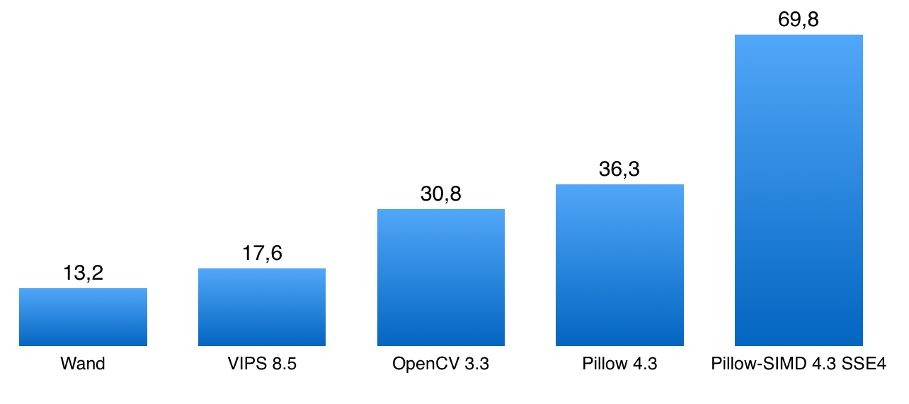
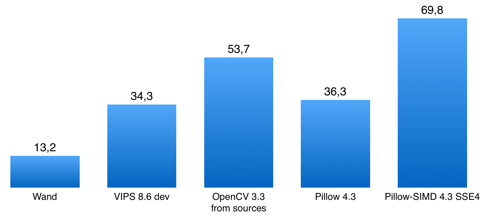

Alexander Karpinsky, Uploadcare
Pillow core team member.
Maker of the Pillow-SIMD library.
On-the-fly image processing service in Uploadcare.
from PIL import Image, ImageFilter.BoxBlurim.filter(ImageFilter.BoxBlur(3))...
import cv2cv2.blur(im, ksize=(3, 3))...
cv2.GaussianBlur(im, (window, window), radius)
radius = 3 58 ms
radius = 30 880 ms
im.filter(ImageFilter.GaussianBlur(radius))
radius = 3 60 ms
radius = 30 61 ms
Load, rotate by 90°, reduce 2.5 times, apply blur, save to JPEG.
Results when you invest some time.

Results page
https://python-pillow.org/pillow-perf/
Benchmark sources
https://github.com/python-pillow/pillow-perf
Actual execution time doesn't change.
Throughput grows in proportion to the number of cores.
Actual execution time lowers.
Throughput grows not in proportion to the number of cores.
Actual execution time lowers.
Throughput grows.
Win-win.
Release GIL
Pillow, OpenCV, pyvips, Wand
Doesn't release
pgmagick
Create not more than N + 1 workers,
where N is a number of CPU cores or threads.
Worker — a process or thread doing the processing.
Executing imaging operations blocks event loop,
even if a library releases GIL.
@gen.coroutinedef get(self, *args, **kwargs):im = process_image(...)...
@run_on_executor(executor=ThreadPoolExecutor(1))def process_image(self, ...):...@gen.coroutinedef get(self, *args, **kwargs):im = yield process_image(...)...
>>> from PIL import Image>>> %time im = Image.open('cover.jpg')Wall time: 1.2 ms>>> im.mode, im.size('RGB', (2152, 1345))
>>> from PIL import Image>>> %time im = Image.open('cover.jpg')Wall time: 1.2 ms>>> im.mode, im.size('RGB', (2152, 1345))>>> %time im.load()Wall time: 73.6 ms
from PIL import ImageImage.open('trucated.jpg').save('trucated.out.jpg')IOError: image file is truncated (143 bytes not processed)
from PIL import Image, ImageFileImageFile.LOAD_TRUNCATED_IMAGES = TrueImage.open('trucated.jpg').save('trucated.out.jpg')
| Pillow | VIPS | OpenCV | IM | |
|---|---|---|---|---|
| Number of codecs | 17 | 12+ | 8 | 66 |
| Broken images | ✅ | ✅ | ✅ | ✅ |
| Lazy loading | ✅ | ✅ | ❌ | ❌ |
| Reading EXIF and ICC | ✅ | ✅ | ❌ | ✅ |
| Auto rotation based on EXIF | ❌ | ✅ | ✅ | ✅ |
cv2.imread(filename)
cv2.imread(filename, flags=cv2.IMREAD_UNCHANGED)
OpenCV is not designed to work with untrusted sources.
OpenCV images are numpy arrays.
import numpyfrom PIL import Image...pillow_image = Image.open(filename)cv_image = numpy.array(pillow_image)
import numpyfrom PIL import Image...pillow_image = Image.fromarray(cv_image, "RGB")pillow_image.save(filename)
Slides: homm.github.io/image-libs-2017/
Email: ak@uploadcare.com